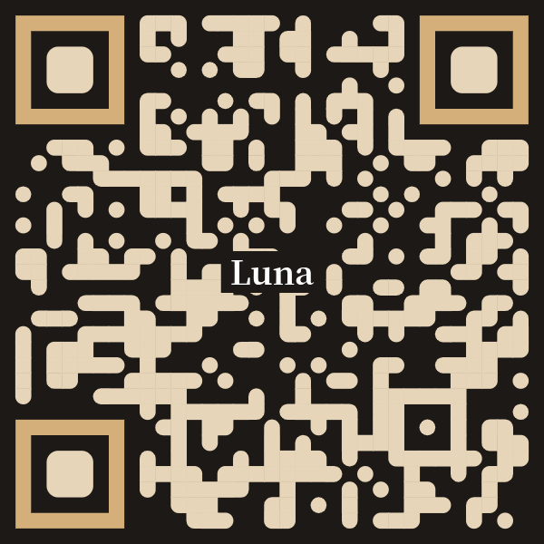
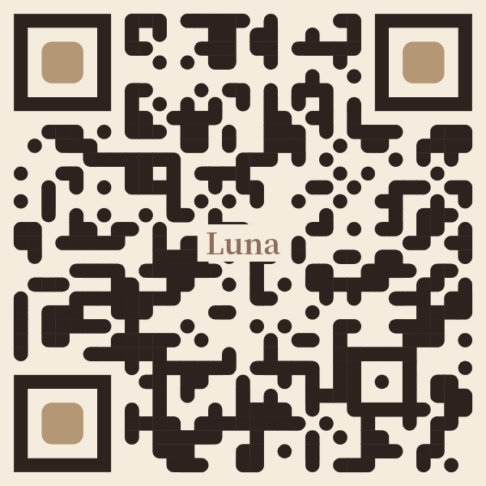

更新日期：2026-06-13
親愛的用戶，我們很高興地宣布 Luna AI Hub 門戶網站已正式部署上線！作為 Luna 系統的核心樞紐，該平台整合了強大的 AI 互動、個人化秘書以及多項量身打造的智慧化核心服務。
本專案採用極致流暢的 Progressive Web App (PWA) 規範進行開發，不僅載入速度極快，更能完美適應您的各式裝置螢幕。

Luna-D (深色主題)
Luna-L (淺色主題)